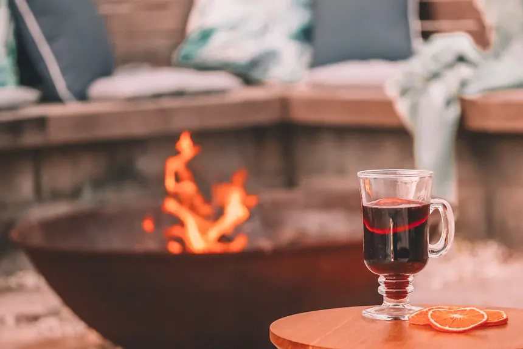

Articles · Reviews · Tips & tricks
Mulled Wine In Minutes!
Alana Kaye · 5 October 2023

A cold snap in the Highlands sends Alana back to the firepit. She tries Mulled Beverages’ spice bags two ways: a saucepan for a few glasses, or a mug in the microwave for one. This was a paid collaboration.